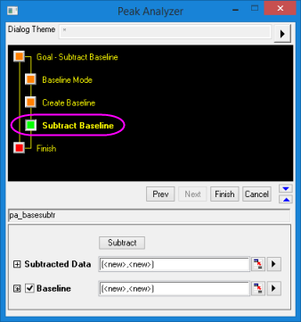
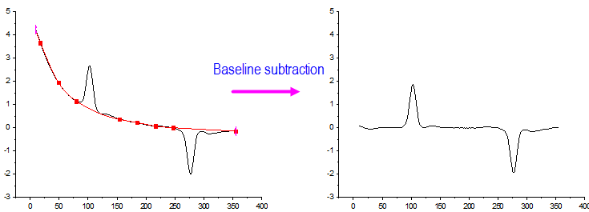

Peak Analyzer, Subtract Baseline
PeakAnalyzer-SubtractBaseline
This page is available when Subtract Baseline is selected for Goal. It helps you to get the subtracted data and the baseline.
-
- 
- Menu Command: Analysis: Peaks and Baseline: Peak Analyzer: Open Dialog
- Window Types: Workbook, Graph
Dialog Theme
Subtract Baseline Controls
| Subtract |
Click this button to subtract the baseline. |
| No Subtract |
Click this button to undo the baseline subtraction. |
| Subtracted Data |
Specifies the destination for the subtracted data. See Output Results. |
| Baseline |
Specifies the destination for the baseline data. See Output Results. |
- 